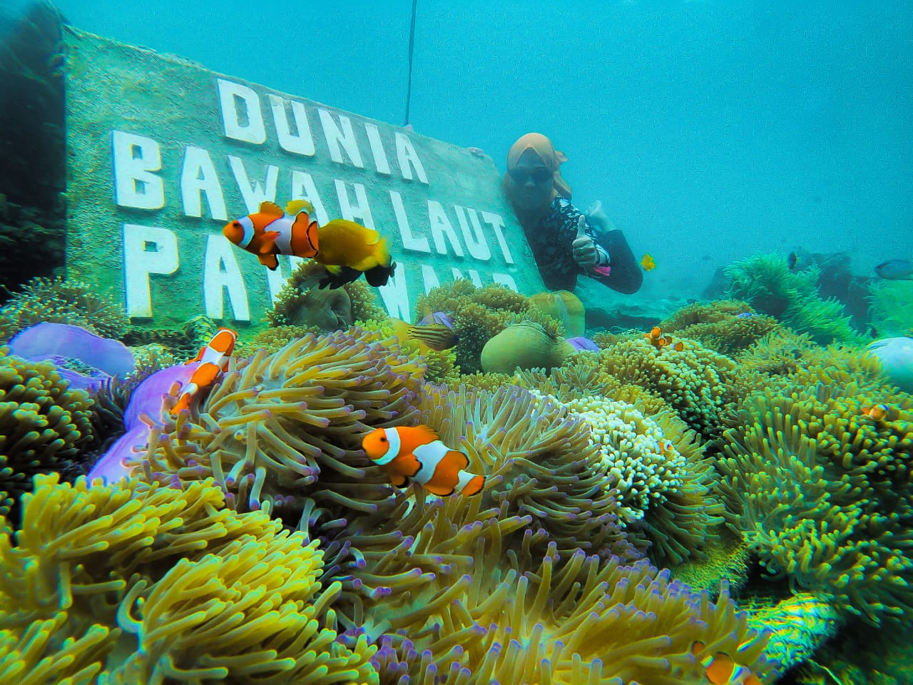
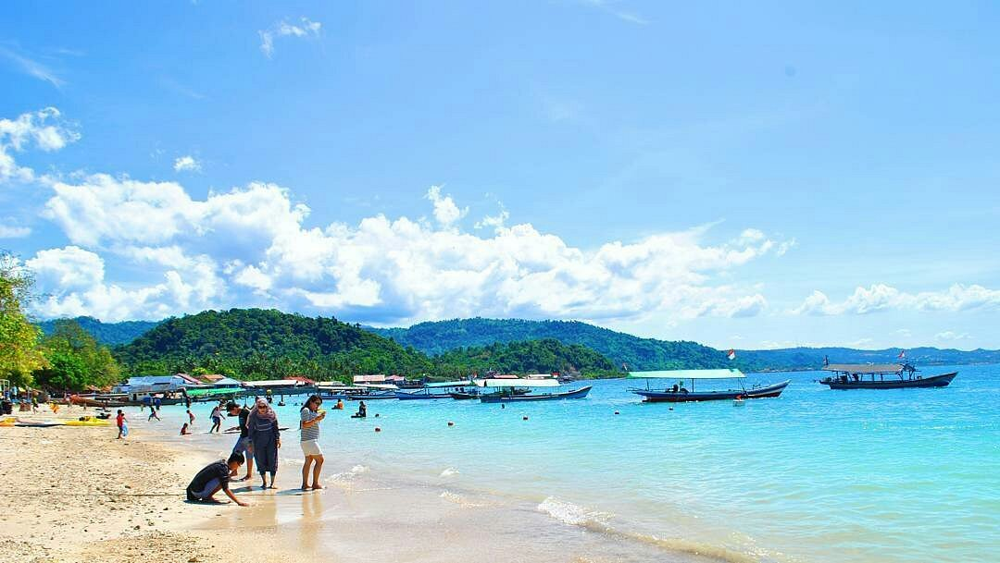
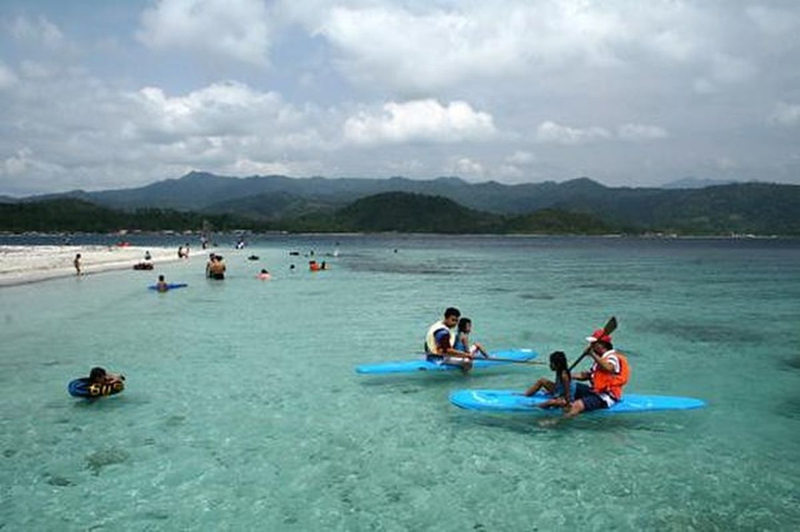
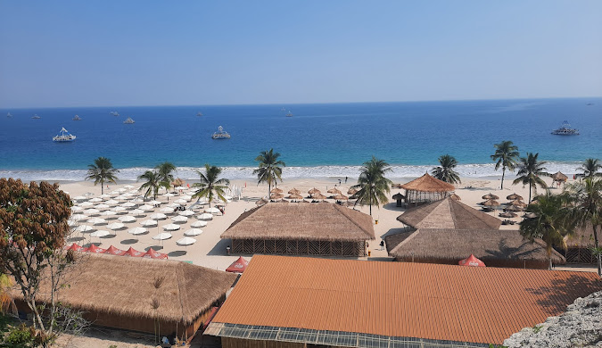

-
Pahawang

-
Mutun


-
Rio by the beach

Pantai Pahawang, yang berada di Pulau Pahawang, Lampung, terkenal dengan keindahan bawah lautnya, menjadikannya surga bagi penggemar snorkeling dan diving. Air lautnya yang jernih berwarna biru kehijauan memungkinkan pengunjung menikmati pemandangan terumbu karang dan ikan tropis, termasuk di spot populer seperti "Taman Nemo." Pantai ini juga memiliki pasir putih halus yang berpadu dengan pepohonan hijau dan bukit-bukit di sekitarnya, menciptakan suasana yang alami dan tenang. Selain snorkeling, pengunjung dapat menikmati kegiatan berperahu mengelilingi pulau-pulau kecil atau bersantai di tepi pantai sambil menunggu matahari terbenam. Pantai Pahawang relatif tenang dan belum terlalu ramai, menawarkan pengalaman liburan yang lebih privat dan damai.
Pantai Mutun, yang terletak di Kabupaten Pesawaran, Lampung, adalah destinasi wisata populer dengan pasir putih lembut dan perairan yang tenang. Pantai ini mudah dijangkau dari Bandar Lampung, menjadikannya favorit untuk rekreasi keluarga. Pengunjung dapat menikmati berbagai aktivitas seperti berenang, bermain kano, serta mencoba olahraga air seperti banana boat dan jet ski. Pantai ini juga menawarkan akses ke Pulau Tangkil, yang bisa dicapai dengan perahu dan menawarkan suasana lebih tenang. Fasilitas di Pantai Mutun cukup lengkap, dengan warung, area parkir, dan tempat bersantai, menjadikannya tempat yang nyaman untuk menikmati liburan singkat, terutama saat matahari terbenam yang menawan.
Pantai Rio By the Beach di Kabupaten Pesawaran, Lampung, adalah destinasi wisata yang menawarkan suasana nyaman dengan pasir putih dan air laut jernih, menjadikannya tempat ideal untuk rekreasi keluarga dan bersantai. Dikenal dengan konsep modern dan spot Instagramable, pantai ini dilengkapi fasilitas seperti area berkemah, restoran tepi pantai, dan gazebo yang nyaman. Pengunjung dapat menikmati berbagai aktivitas, mulai dari berenang hingga bermain voli pantai, sambil menikmati pemandangan alam yang indah. Matahari terbenam di pantai ini juga sangat memukau, dengan langit jingga berpadu dengan laut yang tenang, memberikan pengalaman liburan yang menyenangkan dan penuh kenyamanan.